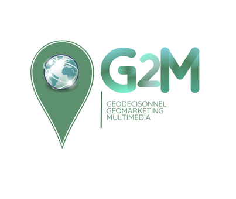

Contact et informations utiles
Géomatique : Géodécisionnel, Géomarketing et Multimédia

Pour toute question ou demande, utilisez le formulaire ci-dessous :
Accédez aux emplois du temps des deux années du Master :
Retrouvez des informations pratiques, des actualités et des événements importants :
Ces élections sont essentielles pour désigner les représentants des enseignants-chercheurs, personnels BIATSS, et usagers au sein des organes décisionnels de l’université. Voici les détails :
Vous pouvez contacter les responsables du Master G2M pour toute question :